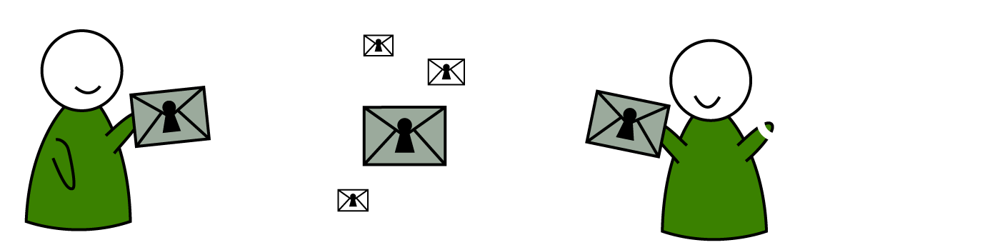

Your privacy - our commitment!
whispeer is a social network that has specialized on the security of your data. We completely encrypt all communication from end to end.
To register an account we only need a username and a password. Everything else is optional.

Encrypted
Everything is de- and encrypted on the client. Only chosen recipients can read messages, no eavesdropping third
Open
All personal details are optional, you may have as many accounts as you like, and usage of pseudonyms is encouraged
Ad-free
There are no ads, payment is voluntary and premium features can be additionally purchased
Why whispeer?
With most services you have to trust your provider to secure your data. With whispeer, we give control over your data back to you. Encryption secures your data from prying eyes, including ours.
How do I register?
We enjoy offering as much security as possible, which is why you have to use at least eight characters for your password. We recommend a password length of over 12 characters and a combination of lower- and uppercase letters, symbols and digits.
Your first and last name is optional and can be entered on your profile setup page directly following your registration. You can also enter your e-mail address if you want to. We will use it only to tell you about whispeer news, and nobody except the whispeer team will be able to see it.
In addition to that, you can add other data to your profile, including your date of birth, the city you live in and your relationship status. Each information is encrypted and will initially only be visible to you. You can then define the rights for each and every piece of information, defining exactly who can see what. You want your friends to see your date of birth, but not where you currently live? No problem. Everyone belonging to your circle 'Colleagues' should see where you work, but not your relationship status? Easy. Just enter your settings and add individual friends, or whole groups for each part. You stay in control.